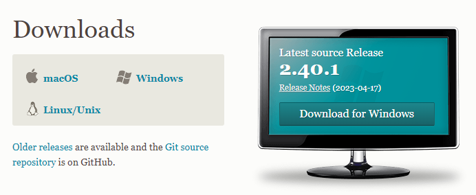
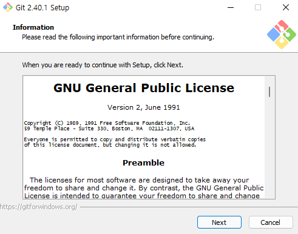
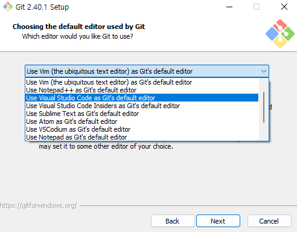
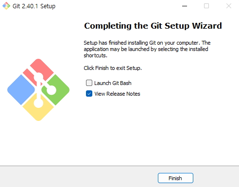

Section 1.3
Git Installation
Install Git for version control and GitHub collaboration.

Step 2
Download Git for your operating system.

Step 3
Proceed with the installation. Start from the screen shown in the first picture.
Select "Use Visual Studio Code as Git's default editor" as shown in the middle picture. This is optional — leaving it unchanged is also fine. Proceed without changing the remaining options.
When the installation is complete, you will see the screen shown in the last picture.

